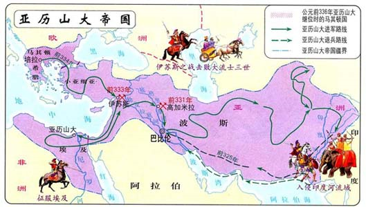

返回主页
亚历山大（春秋战国）的帝国

春秋指前770年-前476年。春秋时代周王的势力减弱，诸侯群雄纷争，齐桓公、晋文公、楚庄王、吴王阖闾、越王勾践相继称霸，史称春秋五霸。
战国时期简称战国，指公元前475年-前221年。战国七雄指七个最强的诸侯国，秦、齐、楚、燕、韩、赵、魏。
亚历山大大帝【Alexander the great（公元前356－前323年）】，古代马其顿国王，亚历山大帝国皇帝，世界古代史上著名的军事家和政治家。他足智多谋，在担任马其顿国王的短短13年中，以其雄才大略。东征西讨，先是确立了在全希腊的统治地位，后又灭亡了波斯帝国。在横跨欧、亚的辽阔土地上，建立起了一个西起希腊、马其顿，东到印度河流域，南临尼罗河第一瀑布，北至药杀水的以巴比伦为首都的庞大帝国。
一带一路(One Belt and One Road)
罗马帝国（汉朝）和丝绸之路
阿拉伯（唐朝）帝国版图
Kojève 苏秦 张仪 鬼谷子
version:1.0; jobnet@188.com © retter2012.com